OneRec 技术报告
摘要
推荐系统多年来已广泛应用于各类面向大规模用户的平台。过去十年间，推荐技术从传统的启发式规则演进到深度学习模型，显著提升了推荐准确率。然而，与 AI 领域日新月异的变化和发展相比，推荐系统近年来并未取得突破性进展。例如，它们仍然依赖多阶段级联架构而非端到端方法，导致计算碎片化和优化不一致。 此外，级联结构阻碍了 AI 领域的关键突破性技术在推荐场景中的有效应用。
为解决这些问题，我们提出了OneRec，通过端到端的生成式方法重塑推荐系统。在这一新架构下，我们取得了令人期待的结果。 首先，我们将当前推荐模型的计算 FLOPs 提升了10 ，并在一定边界内识别出了推荐系统的缩放规律。 其次，强化学习（RL）技术此前难以应用于推荐优化，而在该框架中展现出显著潜力。 最后，通过基础设施优化，我们在训练和推理阶段于旗舰 GPU 上分别实现了23.7%和28.8%的模型 FLOPs 利用率（MFU），与 LLM 领域紧密对齐。该架构显著减少了通信与存储开销，使运营支出（OPEX）仅为传统推荐流水线的10.6%。该系统部署于快手/快手极速版 APP，承载了总每秒查询数（QPS）的25%，分别将整体 App 停留时长提升了0.54%和1.24%。 此外，我们观察到7日生命周期（LT7）等指标显著提升，而这是衡量推荐体验的关键指标。我们还提供了从开发、优化和维护一个具有重大现实影响力的生产级推荐系统中获得的实践经验与洞见。
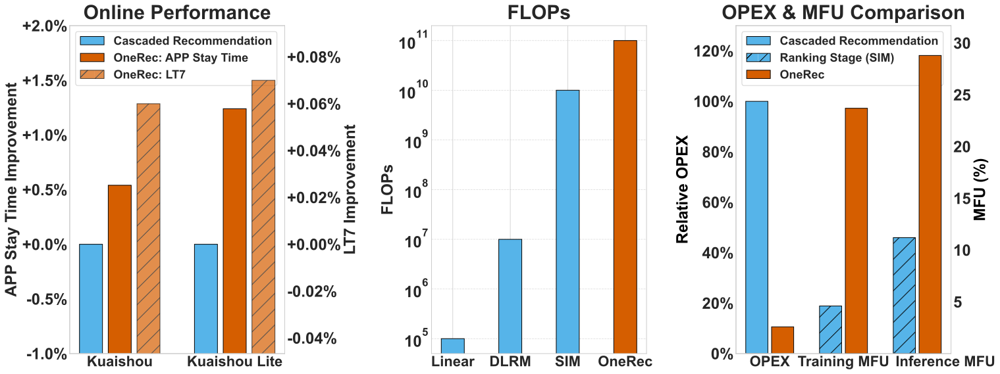
1 引言
随着在线服务的快速发展，推荐系统（RS）已成为缓解信息过载和大规模交付个性化内容的关键基础设施(Ricci et al., 2010)。 在过去几十年中，推荐系统取得了若干突破性进展——从早期的因子分解机(Rendle, 2010)到现代深度学习架构(Guo et al., 2017; Cheng et al., 2016; Zhou et al., 2018; Pi et al., 2020)。 尽管 RS 研究界取得了实质性进展，传统推荐模型仍依赖多阶段级联架构（见图2上半部分）而非端到端方法，这类架构面临若干限制，阻碍了其达到最优性能：
计算碎片化。 级联架构存在计算效率低下的问题。我们以快手为案例，对资源分布进行了全面分析，结果表明在服务期间超过50%的资源被分配用于通信和存储，而非高精度计算。这种对非计算任务的大量资源分配凸显了当前架构中的一个根本性低效问题。此外，专用于计算的资源，尤其是对于计算最密集的排序模型而言，利用率明显偏低。具体而言，该模型在旗舰 GPU 上的训练和推理 MFU 分别仅为4.6%和11.2%，远低于大语言模型（LLM）中所观察到的效率，后者的 MFU 约为40%，对应硬件为 H100 (Shoeybi et al., 2019; Grattafiori et al., 2024)。这一差距凸显了推荐系统中计算任务资源利用的低效。此外，由于高 QPS 要求（大于400k）和低延迟要求（小于500ms），推荐模型往往被约束在以较低规模运行，且并非计算密集型。这种运行约束进一步限制了高精度计算的潜力，从而影响推荐系统的整体性能与可扩展性。
目标冲突。“好”的推荐结果对应何种优化目标并未被良好定义，这导致了以下冲突：
1) 多目标带来的冲突： 除点击率和观看时长等常见优化目标外，还存在来自用户、创作者和平台生态的相互竞争的目标（在快手有数百个目标）。这些目标介入系统的各个阶段，逐渐削弱系统一致性，并增加复杂度和运营低效。
2) 跨阶段建模冲突：即使对相似目标进行建模，由于各阶段模型的结构和规模不同，也可能产生冲突。例如，召回阶段的效果可能受限于排序模型的局限，而排序模型又可能受到上游次优结果的影响。这凸显了在推荐系统中需要更统一的优化目标和模型结构，以确保一致性与效率。
落后于 AI 演进。尽管在 LLM 和视觉语言模型（VLM）领域已取得显著进展（例如缩放规律(Kaplan et al., 2020; Henighan et al., 2020; Hoffmann et al., 2022)、强化学习(Ziegler et al., 2019; Ouyang et al., 2022; Rafailov et al., 2023; Shao et al., 2024)），现有的级联推荐框架在采用这些已被验证的技术方面存在根本性的架构障碍。这种结构性错位造成了推荐系统与主流 AI 进展之间日益扩大的差距，限制了从最先进方法中获得潜在性能提升的可能。
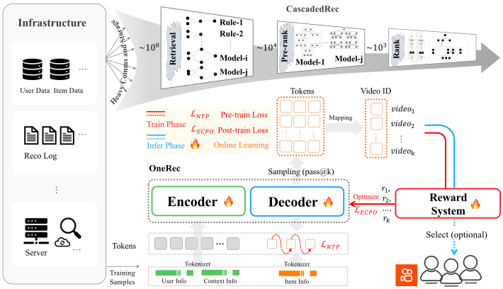
为应对传统级联推荐架构所面临的挑战，我们提出了OneRec（见图2下半部分），这是一种新型推荐系统，旨在通过将召回与排序过程集成到单阶段基于编码器-解码器的生成式框架中，克服级联排序系统的局限。该方法具有以下特点：
端到端优化： 该系统被设计为端到端且足够简单，以便能够直接针对最终目标进行优化。
计算效率： 该方法以计算强度为核心关注点，在训练和推理阶段严格优化计算利用效率，从而充分利用算力进步所带来的收益。
我们的新框架产生了若干重要发现：
-
通过大量基础设施优化，我们在训练和推理阶段于旗舰 GPU 上分别实现了23.7%和28.8%的 MFU——相比原始排序模型分别提升了5.2和2.6——显著缩小了与 LLM 领域的差距。更重要的是，这一端到端架构大幅减少了不必要的通信与存储开销，使 OPEX 仅为传统复杂推荐流水线相关成本的10.6%。目前，其在快手/快手极速版 APP 主要场景的部署承载了总 QPS 的约25%，使 App 停留时长分别提升0.54%和1.24%，同时改善了所有核心指标——包括用户参与度、视频冷启动和分发均衡性——展现出全面的性能提升。
-
我们将当前推荐模型的计算 FLOPs 提升了10。在此过程中，我们识别出了推荐系统的缩放规律。这一发现为如何在模型规模与计算资源扩展时优化推荐系统性能提供了宝贵洞见，确保在各种运行环境中实现高效且有效的部署。
-
强化学习（RL）技术此前在传统架构中影响有限，如今在我们的框架中展现出巨大潜力。我们开展了大量实验，包括离线和线上性能对比，并针对现实工业迭代需求制定了具体的应用实践。这些实现使系统能够利用 RL，从而提升适应性与性能。
2 架构
在本节中，我们介绍 OneRec 架构（如图2下半部分所示）。该架构首先采用分词器（第2.1节）将视频转换为语义 ID，作为模型的预测目标。在训练阶段，编码器-解码器结构（第2.2节和第2.3节）执行下一词元预测以预测目标物品，同时通过奖励系统（第2.4节）进行强化学习对齐。在推理阶段，模型首先生成语义 ID，然后将这些词元映射回视频推荐，并可选择性地执行基于奖励的筛选步骤以进一步优化。
2.1 分词器
OneRec 是快手的生成式推荐系统，而其十亿级且不断增长的物品空间由于计算和架构约束而无法生成原子标识符。 为解决这些问题，OneRec 使用缩减且固定的词表将物品词元化为由粗到细的语义 ID， 从而支持相似物品之间的知识迁移，并更好地泛化到新物品(Rajput et al., 2024)。 然而，先前的解决方案(Rajput et al., 2024; Zheng et al., 2024)仅从上下文特征生成语义 ID，忽略了协同信号，导致重建质量欠佳，如第4.4节所示。因此，我们的解决方案将协同信号与多模态特征相结合，然后利用 RQ-Kmeans(Luo et al., 2024)生成更高质量的层级语义 ID。
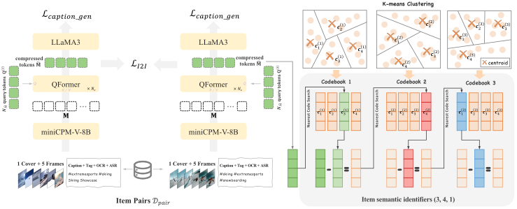
2.1.1 对齐的协同感知多模态表示
我们通过对齐协同相似物品对的多模态表示，将多模态内容与协同信号相结合，如图3左侧所示。因此，我们需要准备多模态表示、物品对以及一种对齐策略：
- •
-
•
物品对。 我们通过以下方式构建高质量物品对数据集： 1）用户到物品召回：对于每个用户，我们取一个被正向点击的目标物品，并将其与用户最近历史正向点击中协同最相似的物品配对，以及 2）物品到物品召回：我们将具有高相似度分数（例如Swing相似度）的物品配对(Yang et al., 2020)。
-
•
物品到物品损失与标题损失。我们引入双重训练目标：1）物品到物品对比损失对齐协同相似的视频对的表示，捕捉行为模式，以及2）标题损失通过使用LLaMA3(Dubey et al., 2024)作为解码器对视频标题执行下一词元预测来防止幻觉，从而保留内容理解能力。
(3) (4) 其中表示温度系数，表示相似度函数，表示一批，表示第个标题词元。
2.1.2 词元化
我们使用RQ-Kmeans(Luo et al., 2024)进行词元化，它采用残差量化以由粗到细的方式生成语义ID。该方法通过直接对残差应用K-means聚类来构建码本。RQ-Kmeans过程的图示见图3（右）。
形式化地，第层的初始残差定义为：
| (5) |
对于每一层，码本由的K-means质心导出：
| (6) |
其中，是码本大小。物品的最近质心索引计算为：
| (7) |
其中表示欧几里得范数。视频在第层的残差随后更新为：
| (8) |
该量化在层上迭代进行。
如第4.4节所示，与广泛使用的RQ-VAE(Rajput et al., 2024; Lee et al., 2022)相比，RQ-Kmeans提供了更高的重建质量、更好的码本利用率以及更好的平衡性。在此阶段，每个视频可以由个由粗到细的语义标识符表示：，它们将作为OneRec推荐系统的输出，从而实现渐进式物品生成。
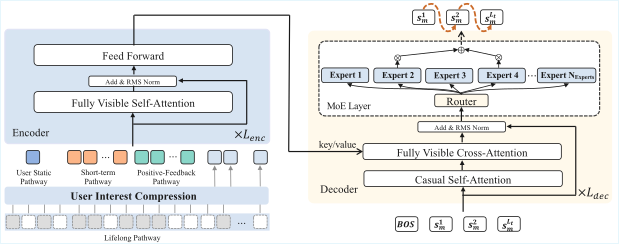
2.2 编码器
2.2.1 多尺度特征工程
本节介绍OneRec的特征工程组件。我们通过四条专门的嵌入路径处理用户行为数据，每条路径旨在捕捉不同尺度的用户交互模式：用户静态路径、短期路径、正反馈路径和终身路径。
用户静态路径
用户静态路径生成核心用户特征的紧凑表示，包括用户标识符（uid）、年龄（age）、性别（gender）等，随后将其变换到模型的隐藏维度：
| (9) | ||||
| (10) |
其中，。
短期路径
正反馈路径
正反馈行为路径在高参与度交互序列（）上运行。该路径保持既定的维度结构：
| (13) | ||||
| (14) |
所有特征跨越个序列位置，得到最终表示。
终身路径
终身行为路径旨在处理超长用户交互历史，序列长度可达100,000个视频。对此类序列直接应用注意力机制在计算上是不可行的。该路径采用受我们先前工作(Si et al., 2024)启发的两阶段层次压缩策略。
行为压缩使用第2.1.1节所述的多模态内容表示，我们对每个用户的交互序列执行层次K-means聚类。为平衡计算效率与模型效果，我们通过将每一步的簇数量设置为来动态调整簇数，其中是当前数据中的物品数量。这是一个经经验确定的设置。当当前簇中的物品数量不超过预设阈值时，聚类过程终止。终止后，我们选择最接近每个簇中心的物品作为该簇的代表。
特征聚合 对于每个簇，我们通过区别处理离散属性和连续属性来构建代表性特征。对于稀疏类别特征，如vid、aid和label，我们直接继承代表性视频（即最接近簇中心的视频）的特征。对于连续特征，如tag、ts、playtime和duration，我们计算簇内所有视频的平均值，以捕捉集体行为模式。
对于用户的长期历史序列（），每个视频被替换为其对应簇代表的特征：
| (15) | ||||
| (16) |
最终表示。 终身路径通过QFormer压缩历史序列，其中可学习查询向量（）关注处理后的历史特征：
| (17) | ||||
| (18) |
经过个块后，我们得到压缩的终身特征表示。
2.2.2 编码器架构
如图4所示，OneRec的编码器架构通过统一的基于Transformer的框架整合多尺度用户行为表示。编码器拼接四条多尺度路径的输出，形成全面的输入序列：
| (19) |
其中表示可学习位置嵌入。整合后的表示经过个Transformer编码器层处理，每一层由完全可见的自注意力机制以及带有RMS归一化的前馈网络组成：
| (20) | ||||
| (21) |
最终编码器输出提供了整体的多尺度用户行为表示，为后续的推荐生成奠定基础。
2.3 解码器
OneRec在解码阶段采用逐点生成范式。对于每个目标视频，解码器输入序列通过将可学习的序列起始词元与该视频的语义标识符拼接而成：
| (22) | ||||
| (23) |
解码器通过个Transformer层处理该序列。每一层执行顺序操作：
| (24) | ||||
| (25) | ||||
| (26) |
每个解码器层结合了专家混合（MoE）前馈网络，以增强模型容量同时保持计算效率。MoE层采用个专家网络，使用top-路由策略：
| (27) |
其中表示由路由机制确定的门控权重，表示第个被选专家网络的输出。为确保专家利用均衡而不引入干扰梯度，我们按照(Liu et al., 2024)实现了一种无损失负载均衡策略。
模型使用交叉熵损失对目标视频的语义标识符进行下一词元预测训练：
| (28) |
2.4 奖励系统
预训练模型仅通过下一词元预测拟合曝光物品空间的分布，而曝光物品来自过去的传统推荐系统。这导致模型无法突破传统推荐的天花板。为解决这一问题，我们引入基于奖励系统的偏好对齐，使用同策略强化学习在生成的物品空间中训练模型。通过奖励，模型感知更细粒度的偏好信息。我们引入偏好奖励以对齐用户偏好、格式奖励以确保生成格式尽可能合法，以及特定工业奖励以对齐某些特殊工业场景需求。
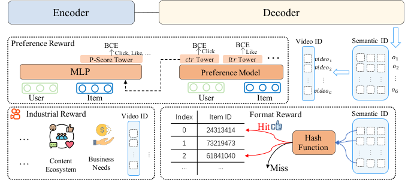
2.4.1 用户偏好对齐
在推荐系统中，定义“好的推荐”远比确定数学解的正确性更具挑战性。传统方法(Wang et al., 2024; Chang et al., 2023)通常定义多个目标，如点击、点赞、评论和观看时长，然后通过各目标预测值（xtr）的加权融合将其组合为一个分数。然而，手动调优这些融合权重具有挑战性，不仅缺乏准确性，也缺乏个性化，并且常常导致目标之间的优化冲突。
为解决这些局限，我们提出使用神经网络学习个性化的融合分数，称为P-Score（偏好分数）(Cao et al., 2025)。该模型的整体框架如图5（中）所示。模型的底层架构基于搜索的兴趣模型（SIM）(Pi et al., 2020)。它包含多个塔，每个塔专门学习特定目标。在训练期间，这些塔使用相应的目标标签计算二元交叉熵（BCE）损失作为辅助任务。每个塔的隐藏状态连同用户和物品表示一起输入最终层的多层感知机（MLP）。该MLP之后是一个输出P-Score的单塔，它使用所有目标的标签计算二元交叉熵损失。该损失可以形式化表示如下：
| (29) |
| (30) |
| (31) |
我们调整的值，使P-Score偏向各目标，最终实现所有目标AUC的提升。 该方法使模型能够接收特定用户信息并适当地调整该用户的偏好分数，而不损害其他用户的体验。与之前不加区分地加权求和的方法相比，该方法更有可能实现帕累托优化。因此，我们使用该方法获得的P-Score作为偏好对齐的奖励。
早期裁剪GRPO
在本节中，我们介绍如何使用偏好分数对齐用户偏好。我们使用ECPO（早期裁剪GRPO）进行优化。具体而言，对于用户，我们使用旧策略模型生成个物品。每个物品连同用户一起输入偏好奖励模型，以获得作为奖励的P-Score。优化目标如下：
| (32) |
| (33) |
| (34) |
其中sg表示停止梯度操作，是大于0的超参数。
我们对 GRPO（Group Policy Relative Optimization，组策略相对优化）(Liu et al., 2024) 进行了一项修改，以使其训练过程更加稳定。示意图见图 6。在原始 GRPO 中，对于负优势，允许较大的策略比率（），这很容易导致梯度爆炸。因此，我们预先对具有大比率的策略进行裁剪，以确保训练稳定性，同时仍允许相应的负优势生效。 越大，可容忍的策略比率就越大，这意味着可容忍的梯度越大。这可以根据实际需求来确定。在 OneRec 中，我们将 设为 0.1，这表明具有负优势的策略比率允许略微超过 。我们移除了 KL 散度损失，因为在 OneRec 中强化学习（RL）与监督微调（SFT）是一起训练的，而 SFT 损失确保了模型的稳定性。
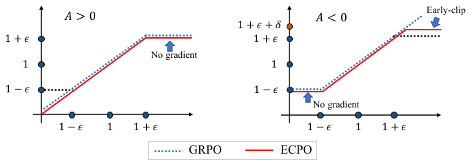
2.4.2 生成格式正则化
在生成式推荐中，合法性比率指的是生成的语义 ID 序列中能够映射到实际物品 ID 的比例。该指标对于评估生成的稳定性至关重要。 在实践中，语义 ID 序列的基数 远大于视频的基数。 这确保所有物品都被覆盖，而更大的词表会引入更多参数，从而带来更好的性能。然而，这也可能导致在推理时生成没有对应物品 ID 的语义 ID 序列，即非法生成。
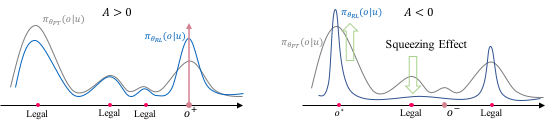
引入采用 ECPO 的强化学习会显著增加非法输出的生成。近期工作 (Ren and Sutherland, 2024) 表明，这是由于负优势引起的挤压效应。如图 7 所示，预训练模型已经学会了生成大多数合法词元。引入 RL 后，具有 的物品仅对分布进行轻微调整。当对具有 的物品施加作用时，模型的概率分布会将大部分概率质量压缩到其当前认为的最优输出 上。这导致部分合法词元的概率被挤压到与非法词元相当的水平，使模型难以区分合法词元。
为解决这一问题，我们提出在强化学习中引入格式奖励，以鼓励模型进行合法生成。具体而言，我们随机选取 个样本用于合法性强化学习，选取范围为 个样本。对于合法样本，我们将优势设为 1；对于非法样本，我们直接将其丢弃，以避免挤压效应。
| (35) |
优化目标的构建方式与 ECPO（式 32）相同，我们直接使用 作为优势。
2.4.3 工业场景对齐
在工业场景中，推荐系统不仅需要考虑用户偏好，还需要考虑各种其他方面。例如，在快手，视频社区的生态、商业化需求，以及冷启动和长尾视频的分发。传统推荐系统试图通过在推荐流水线的某个阶段应用算法或策略来解决这些问题。由于不同阶段之间的不一致性，这很容易导致意外问题交替出现的反复循环。工程师被迫不断通过打补丁进行调整，导致系统随时间推移变得臃肿，阻碍了迭代。在 OneRec 中，我们只需将优化目标纳入奖励系统，并采用强化学习进行有针对性的优化。这种方法不仅便捷，而且能够端到端实现，保持系统一致性。我们将在第 4.3.3 节提供一个优化实践示例。
3 训练框架
3.1 训练基础设施
在本节中，我们描述了支撑 OneRec 大规模预训练的硬件和基础设施，并介绍了几项提升训练效率的优化。
计算。 我们使用 90 台服务器进行训练，每台服务器配备 8 块旗舰 GPU 和 2 个 CPU，通过 400Gbps NVLink 互连，以确保高速的节点内带宽。
网络。 节点内通信由高效的 NVLink 网络负责，而节点间通信则由 400Gbps RDMA（用于训练流量）和 100Gbps TCP（用于训练数据和嵌入预取操作）提供支持。
存储。 每台服务器配备 4 块 NVMe SSD，以加快检查点写入，从而能够将大规模嵌入参数和稠密参数存储到 HDFS 中，并将容错停机时间降至最低。
训练加速。 为实现训练加速，我们实施了若干核心优化：
1) 嵌入加速： 为应对超出 CPU 能力的繁重嵌入工作负载，我们采用快手的 SKAI 框架来实现基于 GPU 的参数服务器。该框架利用跨 GPU 的统一嵌入表、GPU 缓存范式和预取流水线，以提升训练效率并降低管理开销。
2) 训练并行： 模型训练采用数据并行、ZERO1 (Rajbhandari et al., 2020) 与梯度累积的组合。选择 ZERO1 是因为当前模型的稠密参数可以加载到单个 GPU 上，从而在交错多个宏批次时最小化数据并行组中的同步开销。
3) 混合精度训练： 在某些 MLP 网络中使用 BFloat16 进行计算，以优化性能。
4) 编译优化： 对于注意力网络，应用编译优化以减少计算开销。
得益于高度优化的训练基础设施的进步，模型的训练 MFU 提升至 23.7%，显著缩小了与 LLM 训练效率之间的差距。
3.2 预训练
预训练数据
关键超参数
OneRec 系列包含四个模型（两个稠密变体和两个 MoE 变体），专为推荐任务设计。层数、隐藏维度和注意力头数等关键架构超参数详见表 1。在这些模型中，编码器和解码器具有相同的层数。对于稠密变体，标准前馈网络（FFN）通常将隐藏维度 扩展为 。对于 MoE 变体，我们在指定的模块中用 MoE 层替换标准 FFN，并采用 SwiGLU FFN (Thoppilan et al., 2022; Shazeer, 2020) 作为专家。与开源 MoE LLM 的设置 (Jiang et al., 2024; Fedus et al., 2022) 保持一致，每个 SwiGLU 专家的隐藏维度计算为 ，确保其为 128 的倍数。
各模型的收敛曲线见第 4.2.1 节。
| Model | Layers | Hid. Dim | FFN Hid. Dim | Attn. Heads | Experts (Tot/Act) | MoE Loc. |
| OneRec-0.015B (Dense) | 4 | 128 | 256 | 4 | N/A | N/A |
| OneRec-0.121B (Dense) | 8 | 1024 | 2048 | 8 | N/A | N/A |
| OneRec-0.935B (MoE) | 8 | 1024 | 2048 | 8 | 24 / 2 | Decoder |
| OneRec-2.633B (MoE) | 24 | 1024 | 2048 | 8 | 24 / 4 | Enc & Dec |
3.3 后训练
在后训练阶段，我们使用实时数据流进行在线训练。我们同时执行拒绝采样微调（RSFT）和强化学习（RL）。对于 RSFT，我们根据播放时长过滤掉曝光会话中表现最差的 50%。训练损失与预训练过程中的 损失相同，但我们通过将稀疏参数的学习率降低至 、稠密参数的学习率降低至 来应用退火。对于 RL，我们从 RSFT 数据中随机选择 1% 的用户来生成 RL 样本。
为最大化计算资源利用率，我们通过使用外部推理服务将 RL 样本的生成与训练过程解耦。在训练期间，1% 的用户访问外部服务以生成 512 个物品，从奖励模型请求每个物品的奖励，然后将数据返回给训练任务。训练任务每 1000 步通过消息队列（MQ）将更新后的参数发送到外部推理服务。整体后训练过程总结于图 8。
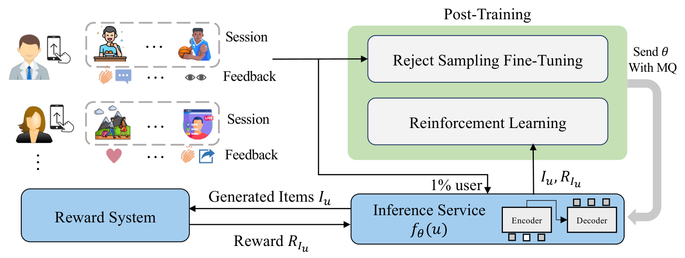
4 评估
4.1 评估指标
我们通过以下指标评估模型性能：
-
•
交叉熵损失：下一词元预测损失 曲线。
-
•
P（偏好）分数：学习到的综合评估指标，详见第 2.4.1 节。
- •
对于 P 分数和 xtr 奖励指标，我们的评估系统在流式数据上运行，其值可能在不同时间段有所变化。因此，由于数据流的时间变化，相同指标在不同实验中可能显示不同的绝对值。然而，我们通过在同一时间段内进行对比实验，并在足够长的观察窗口内对结果取平均，来确保可靠的评估，从而使我们的发现具有统计置信度。
4.2 规模化
4.2.1 训练规模化
参数规模化
OneRec 系列包含不同规模的模型：OneRec-0.015B、OneRec-0.121B、OneRec-0.935B 和 OneRec-2.633B，详见表 1。我们研究了模型参数数量对性能的影响。图 9 展示了这些模型的损失曲线，呈现出明显的规模化趋势，即更大的模型随着训练推进达到更低的损失。这表明模型规模增加带来了强大的性能提升能力。
关于训练数据规模的影响，我们的实验表明，性能在最初约 100 亿个样本内迅速收敛。虽然在此之后提升速度显著降低，但性能并未完全趋于平稳，而是继续从额外数据中获益，尽管速度更慢（即超过 1000 亿个样本）。这表明，虽然在训练早期获得了可观的收益，但使用更大的数据集仍有可能实现进一步的、更渐进的提升。
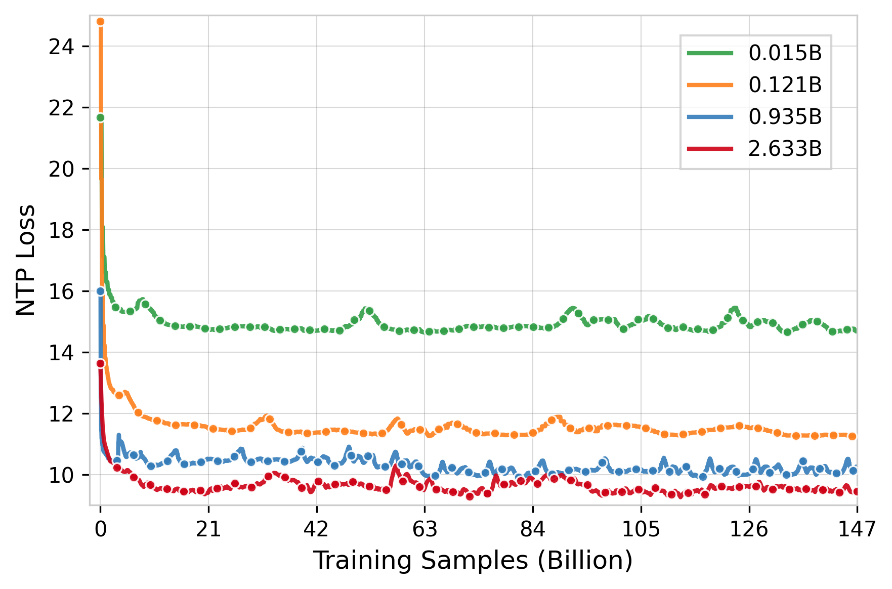
随着模型参数规模扩大，专家之间的负载均衡成为关键问题。专家利用率不均衡会导致训练效率低下和性能次优。我们采用 DeepSeek 的无损失负载均衡策略 (Liu et al., 2024)，该策略在不引入额外损失项的情况下保持专家利用率均衡。采用该策略后，我们观察到损失降低了 0.2，证明了其在改善规模化 OneRec 模型收敛方面的有效性。
除了参数扩展之外，我们还进行了额外的实验，以使用我们的0.935B模型验证在其他关键维度上扩展的有效性。这些实验涵盖特征扩展（考察全面特征工程的影响）、码本扩展（研究词表规模扩大的效果）以及推理扩展（分析束搜索参数的影响）。每个维度都展现出不同的扩展行为，并为未来的模型优化提供了有价值的见解。
特征扩展
为了研究特征工程对模型性能的影响，我们比较了两种输入配置下的模型：一种是仅使用物品ID vid嵌入（来自256正反馈物品）的基线配置，另一种是加入我们方法中所述全面特征集的增强版本。如Figure 10和Table 2所示，加入额外特征的增强模型实现了更低的训练损失，并在推荐质量的多个维度上取得了显著提升。
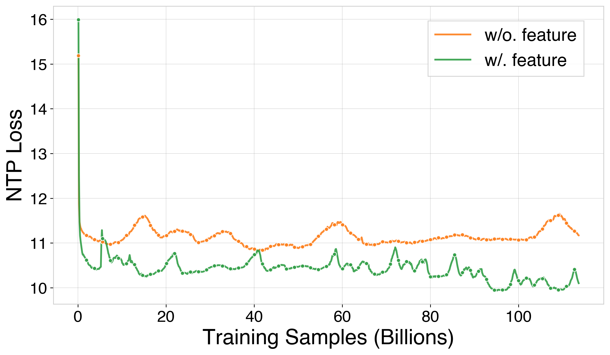
| Metric | w/o. feature | w/. feature | Impr. |
| lvtr | 0.4940 | 0.5500 | 11.34% |
| vtr | 0.8730 | 0.8901 | 1.96% |
| ltr | 0.0391 | 0.0441 | 12.79% |
| wtr | 0.0190 | 0.0224 | 17.89% |
| cmtr | 0.0919 | 0.1010 | 9.90% |
| P-score | 0.0749 | 0.0966 | 28.88% |
码本扩展
为了研究码本大小对模型性能的影响，我们通过将码本从8,192扩展到32,768进行实验。需要注意的是，如我们在参数扩展实验中所定义的NTP损失，在此处不能直接用于比较。这是因为码本大小的增加会固有地扩大交叉熵损失计算的候选集，从而使直接的损失比较产生误导。因此，我们使用基于奖励的指标来评估性能。各项指标的性能提升如表3所示。如结果所示，增大码本大小在播放时长指标上带来了显著提升，并在交互指标上带来了轻微增益。
推理扩展
我们研究了推理时不同生成物品数量（Pass@K）对模型性能的影响。如Table 4详述，将Pass@K的K从8增加到512，在所有评估指标上均带来一致的性能提升。然而，进一步将K从512增加到1,024仅带来边际增益。考虑到性能提升与相关计算资源消耗之间的权衡，我们选择K=512用于生产环境部署。
| Metric | Size=8K | Size=32K | Impr. |
| lvtr | 0.5118 | 0.5245 | 2.48% |
| vtr | 0.9384 | 0.9491 | 1.14% |
| ltr | 0.0298 | 0.0299 | 0.34% |
| wtr | 0.0153 | 0.0154 | 0.65% |
| cmtr | 0.0650 | 0.0664 | 2.15% |
| P-score | 0.2516 | 0.2635 | 4.75% |
| Metric | Pass@8 | Pass@64 | Pass@512 | Pass@1024 | Impr. |
| lvtr | 0.3675 | 0.4927 | 0.5351 | 0.5443 | 48.11% |
| vtr | 0.9444 | 0.9462 | 0.9513 | 0.9530 | 0.91% |
| ltr | 0.0278 | 0.0346 | 0.0425 | 0.0452 | 62.59% |
| wtr | 0.0114 | 0.0138 | 0.0182 | 0.0197 | 72.81% |
| cmtr | 0.0350 | 0.0566 | 0.0809 | 0.0891 | 154.57% |
| P-score | 0.0811 | 0.2051 | 0.3375 | 0.3859 | 376.10% |
4.2.2 语义标识符输入表示
随着模型规模扩展到数十亿参数，我们探索了一种替代的输入表示策略，即对用户交互历史利用视频语义标识符，而不是为视频标识符（vid）构建单独的稀疏嵌入。这种语义标识符输入达到了与传统稀疏嵌入方法相当的性能，同时在参数效率、通信开销和序列处理能力方面具有显著优势，使其对于进一步的扩展探索特别有前景。
扩展性能分析
如Figure 11所示，我们的实证分析表明，在规模化（2.6B参数）情况下，语义标识符输入方法达到与传统稀疏嵌入方法相当或更优的性能。
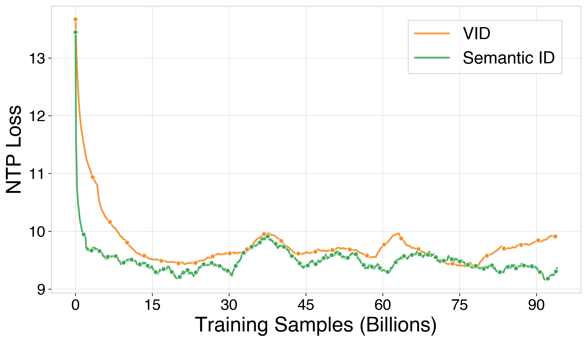
| Metric | VID | Semantic ID | Impr. |
| lvtr | 0.4447 | 0.4467 | 0.45% |
| vtr | 0.8725 | 0.8726 | 0.01% |
| ltr | 0.0336 | 0.0336 | 0.00% |
| wtr | 0.0104 | 0.0105 | 0.96% |
| cmtr | 0.0565 | 0.0573 | 1.42% |
| P-score | 0.0371 | 0.0378 | 1.74% |
优势与未来扩展
语义标识符方法相比传统稀疏嵌入方法提供了若干关键优势，使其对进一步的扩展探索特别有吸引力：
-
•
参数效率：通过在输入和输出表示之间共享嵌入，模型消除了为vid维护单独稀疏嵌入表的需要。这大幅减少了总参数数量，对于拥有数十亿物品的快手而言尤其如此。
-
•
通信效率：在分布式训练环境中，稀疏嵌入操作需要大量参数服务器通信以进行嵌入查找和梯度更新。语义标识符方法通过利用稠密操作和共享词表减少了通信开销，从而实现更快的训练吞吐量并减少通信瓶颈。
-
•
扩展序列容量：消除大型稀疏嵌入表使得计算资源可以分配给处理更长的用户交互序列。这使模型能够捕捉更全面的用户偏好演化模式，并有可能将序列长度从数千次交互扩展到数万次交互。
-
•
表示一致性：在输入和输出之间共享相同的语义空间确保了表示的一致性，并使模型能够学习更连贯的物品到物品关系。这种统一表示有潜力促进在不同推荐场景之间更好的泛化。
鉴于这些显著优势以及在2.6B参数规模下展现出的竞争性性能，我们正基于语义标识符输入表示积极推进进一步的扩展探索。这种方法有望在保持计算效率和架构优雅性的同时，为大规模推荐系统开启新的可能性。
4.3 强化学习
4.3.1 用户偏好对齐
界定什么构成“好的”推荐一直是一项具有挑战性的任务。为了严格验证强化学习的影响，我们使用单目标的vtr（观看转化率，view-through rate）作为奖励，它对应观看时长和应用停留时长等线上指标。所报告的线上结果是与快手传统推荐系统（称为整体基线）相比的相对提升。表中的相对提升表示后一组相对前一组取得的相对提升。
值得注意的是，虽然使用vtr作为奖励可以显著提升时长指标，但它并不一定意味着高质量的推荐，因为其他指标，例如视频观看数（表示观看的视频数量），可能会显著下降。我们主要关注观看时长和应用停留时长来寻找最优的强化学习设置，并最终用它来验证P-Score奖励的收益。
采样效率
强化学习优化采样物品的概率分布，以提高选中高奖励物品的可能性，从而显著提升采样效率。为了量化这一效果，我们在pass@32、pass@128和pass@512上进行多点采样实验，结果汇总于表6。以未使用强化学习的模型为基线，我们将应用停留时长的提升定义为采样效率差距。值得注意的是，强化学习在pass@32处展现出最显著的提升差距，表明排名靠前物品的准确率得到了显著增强。这一提升对于降低采样开销至关重要，因为它确保了在采样少量物品时具有高精度。在推荐系统中，平衡成本与收益至关重要，而在较低采样数量下准确率的提升为实现这种平衡提供了坚实基础。
| Method | vtr | Watch time | App Stay Time | Video View1 | |
| Pass@32 | OneRec w/o RL | 0.1978 | +1.62% | -0.10% | -4.18% |
| OneRec w/ RL | 0.2138 | +3.17% | +0.39% | -9.87% | |
| Relative Impr. | +8.08% | +1.55% | +0.49% | -3.69% | |
| Pass@128 | OneRec w/o RL | 0.2239 | +4.61% | +1.11% | -12.75% |
| OneRec w/ RL | 0.2387 | +5.22% | +1.49% | -15.06% | |
| Relative Impr. | +6.61% | +1.53% | +0.38% | -2.65% | |
| Pass@512 | OneRec w/o RL | 0.2444 | +6.32% | +1.66% | -15.54% |
| OneRec w/ RL | 0.2494 | +5.88% | +1.75% | -13.88% | |
| Relative Impr. | +2.05% | -0.41% | +0.09% | +1.97% |
搜索空间
在ECPO训练中，扩大动作搜索空间会增加发现具有最大奖励的最优物品的可能性，但代价是更高的计算成本。为了研究这一权衡，我们考察搜索空间大小（即组大小）如何影响性能。pass@128的结果汇总于表7。从表7中，我们观察到当组大小从128增加到512时，性能显著提升。这清晰地展示了扩大搜索空间的积极影响。略令人失望的是，将搜索空间增加到2048并未带来太多额外收益，这可能是因为当前参考模型的多样性不足以发现更多更好的物品。尽管如此，这一发现仍然很有前景，我们根据经验建议将ECPO训练组大小设置为推理输出数量的约四倍以获得最佳效果。
| Group Size | vtr | Watch time | App Stay Time | Video View1 |
| 0(w/o RL) | 0.2198 | +4.61% | +1.11% | -12.75% |
| 128 | 0.2303 | +5.22% | +1.49% | -15.06% |
| 512 | 0.2350 | +5.73% | +1.82% | -15.49% |
| 2048 | 0.2352 | +5.84% | +1.78% | -15.49% |
搜索策略
大型语言模型的强化学习通常采用top-和top-采样来生成样本。在OneRec中，我们还探索了束搜索作为替代策略。表8比较了这两种方法的结果，揭示出在OneRec的强化学习框架中，束搜索显著优于top-和top-采样。这一提升源于语义ID结构固有的规律性，该结构遵循前缀树编码方案，因而与束搜索的系统化探索方式高度契合。
| vtr | Watch time | App Stay Time | Video View1 | |
| Top-+Top- | 0.2131 | +4.45% | +1.16% | -13.61% |
| Beam Search | 0.2162 | +5.35% | +1.76% | -13.30% |
| Relative Impr. | +1.45% | +0.87% | +0.60% | +0.36% |
参考模型
在本节中，我们比较了ECPO中用于策略生成的两种参考模型：（1）预训练模型（离策略）和（2）当前策略模型（在策略）。实验结果汇总于表9。从表中可以明显看出，使用当前策略模型能获得更好的结果，尤其是在离线奖励评估中。这表明在策略方法使模型能够不断自我教学，突破参考模型的局限并达到更高的上限。然而，在线上性能方面，在策略方法的提升并不十分显著。这是由于奖励定义不够理想，导致轻微的奖励黑客现象。我们将把这一方面作为未来工作的重点方向。
| Reference Model | vtr | Watch time | App Stay Time | Video View1 |
| Pre-trained Model | 0.2262 | +5.35% | +1.51% | -13.51% |
| Current Policy Model | 0.2389 | +6.19% | +1.56% | -13.89% |
| Relative Impr. | +5.61% | +0.79% | +0.04% | -13.89% |
P-Score奖励
在本节中，我们观察使用P-Score作为奖励时通过强化学习取得的全面改进。基于上述消融实验的结论，我们选择最优的强化学习设置，即使用束搜索进行强化学习样本生成，并采用当前策略模型作为参考模型。我们在两种场景（包括快手和快手极速版）下考察强化学习的影响，结果汇总于表1。从表中可以得出结论，在两种场景下，P-Score显著提升了应用停留时长和观看时长，同时也增加了视频观看数，表明整体用户推荐体验得到了提升。
| Scenario | Watch time | App Stay Time | Video View |
| Kuaishou | +0.21% | +0.26% | +0.17% |
| Kuaishou Lite | +0.71% | +0.22% | +0.35% |
4.3.2 生成格式正则化
在本节中，我们进行实验以验证格式奖励的有效性。如Section 2.4.2所述，在将强化学习引入预训练模型后，由于挤压效应，模型输出的合法性显著下降到50%以下。这意味着超过一半的生成语义ID并不对应实际的视频ID，这不利于推荐的稳定性和推理的可扩展性。我们通过比较两种用于计算格式损失的样本选择方法来评估格式奖励的影响：（1）选择概率最高的top-5个样本，选择范围为128个生成候选，以及（2）随机选择5个样本。
图12展示了它们对输出合法性的影响。左图显示了所有128个生成样本的合法性率，而右侧面板则聚焦于被选中的样本。在没有格式奖励的情况下，基线合法性保持在50%以下。Top-k Selection 方法呈现出一种有趣的模式：虽然整体合法性先升后降，但被选中的样本迅速达到100%的合法性，这表明模型只学会了在排名靠前的子集中生成合法输出。相比之下，Random Selection 呈现出更具挑战性的学习目标，却能带来稳定的提升——最终达到95%的合法性且未出现下降。
值得注意的是，格式奖励的整合带来的益处不止于合法性本身。在线指标显示出显著增益：APP Stay Time 提升 +0.13%，Watch Time 提升 +0.30%。这一实验案例不仅验证了格式奖励机制，也凸显了在强化学习系统中精心设计奖励的关键作用。
4.3.3 工业场景对齐
在本节中，我们给出一个利用强化学习解决工业挑战的实际案例。在快手平台上，营销号内容农场构成了内容创作者的重要部分，它们主要生产质量参差不齐的搬运与剪辑视频。尽管 OneRec 在多个业务指标上展现出优于传统推荐系统的性能，但我们观察到，如果没有恰当的后置过滤策略，营销号内容的曝光比例会显著增加，这可能对平台生态产生负面影响。
营销号内容视频的最优比例可设为。当该比例超过时，我们对其 P-score 奖励进行降权以抑制它们，同时保持系统对这些内容质量的感知。
| (36) |
其中为抑制因子。
我们将该方法称为 Specific Industrial Reward（SIR）。实验结果表明，SIR 能够将营销号内容曝光有效降低9.59%，同时在核心指标（Watch time 和 APP Stay Time）上保持稳定性能。该实验凸显了 OneRec 的关键优势：通过强化学习的奖励塑形能力实现精确且一致的优化，而这是传统推荐系统从根本上无法具备的特性。
4.4 分词器
我们采用三个指标来全面评估我们的分词方法，涵盖准确性、资源利用率和分布均匀性等方面：
| RQ-VAE | RQ-Kmeans | ||
| Reconstruction Loss | 0.0548 | 0.0410 | |
| Codebook Utilization | layer 1 | 1.0000 | 1.0000 |
| layer 2 | 0.9963 | 1.0000 | |
| layer 3 | 0.9958 | 1.0000 | |
| Token Distribution Entropy | layer 1 | 8.3892 | 8.9191 |
| layer 2 | 8.4805 | 8.7770 | |
| layer 3 | 8.6037 | 8.7276 | |
如表11所示，与 RQ-VAE 相比，RQ-Kmeans 的重建损失降低了25.18%，在保留输入信息方面表现出更高的准确性。同时，RQ-Kmeans 在全部三层中实现了完美利用率（1.0000），表明码本中的资源效率达到最优，而 RQ-VAE 在第2层和第3层的利用率略低。此外，与 RQ-VAE 相比，RQ-Kmeans 在所有三层中均表现出更高的熵值，显著提升幅度为6.31%、3.50%和1.44%，分别对应第1层、第2层和第3层，这表明 RQ-Kmeans 产生的词元分布更均匀、更平衡，有利于模型的稳定性和泛化能力。这些综合结果表明，RQ-Kmeans 在所有三个评估指标上均优于 RQ-VAE，使其成为更有效的分词选择。
关于物品表示和分词质量的进一步定性分析见附录C。
4.5 在线 A/B 测试
我们在快手的两个主要短视频场景中部署了 OneRec：快手主信息流和快手极速版信息流——这是平台上流量最高的场景，日活跃用户达400百万。我们使用5%的流量实验组进行为期一周的观测，主要指标为 APP Stay Time（反映用户总参与时长）和 LT7（7日生命周期）。我们设立了两个实验组：一个采用纯生成式模型（OneRec），另一个在生成式输出基础上加入基于奖励模型的选择（OneRec with RM Selection）。如表12所示，采用基于强化学习的用户偏好对齐的纯生成式模型显著达到了整个复杂推荐系统的性能水平。进一步应用奖励模型选择后，在这两个场景中分别实现了统计显著的提升：APP Stay Time 提升 +0.54%和 +1.24%，LT7 提升 +0.05%和 +0.08%。值得注意的是，在快手上，APP Stay Time 提升0.1%、LT7 提升0.01%已被视为统计显著。此外，OneRec 在所有互动指标（点赞、关注、评论等）上均展现出显著增益，表明其能够使多任务系统收敛到更平衡的均衡状态，而不产生跷跷板效应。经过验证，我们已将部署扩展至约占总 QPS 的25%，实现细节见附录B。
除快手短视频推荐场景外，我们还在其一个重要业务场景——本地生活服务中进行了实验。结果表明，OneRec 实现了GMV 增长21.01%、订单量增长17.89%、买家数增长18.58%，以及新买家获取增长23.02%。因此，该系统目前已接管该业务场景100%的 QPS。在全量部署后，我们观察到所有指标的增长甚至强于初始实验阶段。这些结果证明了 OneRec 在多样业务场景中提升推荐性能的泛化能力。
| Scenarios | Online Metrics | OneRec | OneRec with RM Selection |
| Kuaishou | App Stay Time | +0.01% | +0.54% |
| Watch Time | +0.07% | +1.98% | |
| Video View | +1.98% | +2.52% | |
| Like | -2.00% | +2.43% | |
| Follow | -2.88% | +3.24% | |
| Comment | -1.56% | +5.27% | |
| Collect | -0.61% | +2.93% | |
| Foward | +0.27% | +5.90% | |
| Kuaishou Lite | App Stay Time | +0.06% | +1.24% |
| Watch Time | +0.05% | +3.28% | |
| Video View | +2.40% | +3.39% | |
| Like | -2.64% | +1.49% | |
| Follow | -2.75% | +2.28% | |
| Comment | -2.23% | +3.20% | |
| Collect | -1.76% | +1.91% | |
| Foward | -1.86% | +3.48% |
基础设施与效率 我们使用 NVIDIA L20 GPU 进行推理，每台服务器配备4个 GPU 和2个 CPU，通过 PCIe 连接。我们采用快手的预测平台——UniPredict 来支撑在线流量。推理服务和嵌入服务部署在200Gb RDMA 数据中心中，利用 RoCE 网络。最大机器间通信带宽达到800Gb。 为提高效率，我们采用 TensorRT 编译和优化模型的计算图。通过自定义插件，我们实现了 cross-attention、MoE 等操作的高性能实现。结合批处理和 MPS 技术，我们实现了5的吞吐量提升，MFU 达到28.8%。
5 结论、局限性与未来方向
在本文中，我们提出了 OneRec，一种新颖的端到端生成式推荐架构。它构建为编码器-解码器模型，通过编码器压缩用户的终身行为序列以推导用户兴趣，同时利用混合专家（MoE）大规模扩展解码器参数，以实现精确的短视频推荐解码。在后训练阶段，我们开发了定制的强化学习（RL）框架，通过将模型输出与奖励函数对齐来优化推荐。得益于细致的工程优化，OneRec 在训练和推理中分别实现了23.7%和28.6%的模型浮点运算利用率（MFU）——相比个位数基线实现了大幅提升——缩小了与主流 AI 社区的差距。值得注意的是，这种计算密集型设计的运营支出（OPEX）仅为传统推荐系统的10.6%。综合评估表明，OneRec 在效果和效率上均已超越现有推荐系统。在认可其强大性能和高成本效益的同时，我们也认识到 OneRec 的一些局限性，并计划在以下方面进行战略性投入：
-
•
推理阶段扩展：推理阶段的步数扩展尚不明显，表明 OneRec 目前缺乏强大的推理能力。
-
•
多模态整合：OneRec 尚未与 LLM（大语言模型）和 VLM（视觉语言模型）整合。用户行为也是一种模态，未来我们计划设计解决方案，使用户行为模态成为原生多模态模型的一部分，类似于视觉和音频对齐。
-
•
奖励系统设计：奖励系统设计仍非常初级，这是一个令人兴奋的方面。从历史上看，推荐系统并非端到端，难以定义和迭代什么构成好的推荐结果。在 OneRec 架构下，奖励系统同时影响在线结果和离线训练。我们相信，这一结构很快将带来推荐奖励系统的技术突破。
OneRec 建立了一种全新的架构，为技术演进、业务价值优化和团队协作引入了变革性框架。虽然目前尚未在快手的全部流量场景中部署，但我们已将其作为基础方法，以系统性地拓展算法创新的边界，同时完善团队协作机制，从而构建能够支撑大规模流量增长的可扩展基础设施。
参考文献
- The word entropy of natural languages. arXiv preprint arXiv:1606.06996. Cited by: 3rd item.
- Pantheon: personalized multi-objective ensemble sort via iterative pareto policy optimization. arXiv preprint arXiv:2505.13894. Cited by: §2.4.1.
- TWIN: two-stage interest network for lifelong user behavior modeling in ctr prediction at kuaishou. In Proceedings of the 29th ACM SIGKDD Conference on Knowledge Discovery and Data Mining, pp. 3785–3794. Cited by: §2.4.1, 3rd item.
- Wide & deep learning for recommender systems. In Proceedings of the 1st workshop on deep learning for recommender systems, pp. 7–10. Cited by: §1.
- The llama 3 herd of models. arXiv preprint arXiv:2407.21783. Cited by: 3rd item.
- A review of sparse expert models in deep learning. arXiv preprint arXiv:2209.01667. Cited by: §3.2.
- The llama 3 herd of models. arXiv preprint arXiv:2407.21783. Cited by: §1.
- DeepFM: a factorization-machine based neural network for ctr prediction. arXiv preprint arXiv:1703.04247. Cited by: §1.
- Scaling laws for autoregressive generative modeling. arXiv preprint arXiv:2010.14701. Cited by: §1.
- Training compute-optimal large language models. arXiv preprint arXiv:2203.15556. Cited by: §1.
- Minicpm: unveiling the potential of small language models with scalable training strategies. arXiv preprint arXiv:2404.06395. Cited by: 1st item.
- Mixtral of experts. arXiv preprint arXiv:2401.04088. Cited by: §3.2.
- Scaling laws for neural language models. arXiv preprint arXiv:2001.08361. Cited by: §1.
- Autoregressive image generation using residual quantization. In Proceedings of the IEEE/CVF Conference on Computer Vision and Pattern Recognition, pp. 11523–11532. Cited by: §2.1.2.
- Blip-2: bootstrapping language-image pre-training with frozen image encoders and large language models. In International conference on machine learning, pp. 19730–19742. Cited by: 1st item.
- Deepseek-v3 technical report. arXiv preprint arXiv:2412.19437. Cited by: §2.3, §2.4.1, §4.2.1.
- QARM: quantitative alignment multi-modal recommendation at kuaishou. arXiv preprint arXiv:2411.11739. Cited by: §2.1.2, §2.1.
- Training language models to follow instructions with human feedback. Advances in neural information processing systems 35, pp. 27730–27744. Cited by: §1.
- Search-based user interest modeling with lifelong sequential behavior data for click-through rate prediction. In Proceedings of the 29th ACM International Conference on Information & Knowledge Management, pp. 2685–2692. Cited by: §1, §2.4.1.
- Direct preference optimization: your language model is secretly a reward model. Advances in Neural Information Processing Systems 36, pp. 53728–53741. Cited by: §1.
- Zero: memory optimizations toward training trillion parameter models. In SC20: International Conference for High Performance Computing, Networking, Storage and Analysis, pp. 1–16. Cited by: §3.1.
- Recommender systems with generative retrieval. Advances in Neural Information Processing Systems 36. Cited by: §2.1.2, §2.1.
- Learning dynamics of llm finetuning. arXiv preprint arXiv:2407.10490. Cited by: §2.4.2.
- Factorization machines. In 2010 IEEE International conference on data mining, pp. 995–1000. Cited by: §1.
- Introduction to recommender systems handbook. In Recommender systems handbook, pp. 1–35. Cited by: §1.
- Deepseekmath: pushing the limits of mathematical reasoning in open language models. arXiv preprint arXiv:2402.03300. Cited by: §1.
- Glu variants improve transformer. arXiv preprint arXiv:2002.05202. Cited by: §3.2.
- Megatron-lm: training multi-billion parameter language models using model parallelism. arXiv preprint arXiv:1909.08053. Cited by: §1.
- Twin v2: scaling ultra-long user behavior sequence modeling for enhanced ctr prediction at kuaishou. In Proceedings of the 33rd ACM International Conference on Information and Knowledge Management, pp. 4890–4897. Cited by: §2.2.1.
- Lamda: language models for dialog applications. arXiv preprint arXiv:2201.08239. Cited by: §3.2.
- HoME: hierarchy of multi-gate experts for multi-task learning at kuaishou. arXiv preprint arXiv:2408.05430. Cited by: §2.4.1, 3rd item.
- Large scale product graph construction for recommendation in e-commerce. CoRR abs/2010.05525. External Links: 2010.05525 Cited by: 2nd item.
- Adapting large language models by integrating collaborative semantics for recommendation. In 2024 IEEE 40th International Conference on Data Engineering (ICDE), pp. 1435–1448. Cited by: §2.1.
- Deep interest network for click-through rate prediction. In Proceedings of the 24th ACM SIGKDD international conference on knowledge discovery & data mining, pp. 1059–1068. Cited by: §1.
- Scaling the codebook size of vqgan to 100,000 with a utilization rate of 99%. arXiv preprint arXiv:2406.11837. Cited by: 2nd item.
- Fine-tuning language models from human preferences. arXiv preprint arXiv:1909.08593. Cited by: §1.
附录
Appendix A 贡献
在每个角色内，作者按名字的字母顺序排列。 标注 * 的名字表示已离开我们团队的人员。
核心贡献者
Guorui Zhou
Jiaxin Deng
Jinghao Zhang
Kuo Cai
Lejian Ren
Qiang Luo
Qianqian Wang
Qigen Hu
Rui Huang
Shiyao Wang
Weifeng Ding*
Wuchao Li
Xinchen Luo
Xingmei Wang
Zexuan Cheng
Zixing Zhang
贡献者
Bin Zhang
Boxuan Wang
Chaoyi Ma
Chengru Song
Chenhui Wang
Di Wang
Dongxue Meng
Fan Yang
Fangyu Zhang
Feng Jiang
Fuxing Zhang
Gang Wang
Guowang Zhang
Han Li
Hengrui Hu
Hezheng Lin*
Hongtao Cheng
Hongyang Cao
Huanjie Wang
Jiaming Huang
Jiapeng Chen
Jiaqiang Liu
Jinghui Jia
Kun Gai
Lantao Hu
Liang Zeng
Liao Yu
Qiang Wang
Qidong Zhou
Shengzhe Wang
Shihui He
Shuang Yang
Shujie Yang
Sui Huang
Tao Wu
Tiantian He
Tingting Gao
Wei Yuan
Xiao Liang
Xiaoxiao Xu
Xugang Liu
Yan Wang
Yi Wang
Yiwu Liu
Yue Song
Yufei Zhang
Yunfan Wu
Yunfeng Zhao
Zhanyu Liu
Appendix B 在线 A/B 测试的实现细节
在本节中，我们介绍 OneRec 在线上 A/B 测试中的实现细节。在推荐系统中，用户的一次请求通常会触发多个系统模块，以生成实时推荐结果。然而在实际应用中，巨大的 QPS（峰值 QPS 可超过 400k）需要大量资源来处理如此高的并发。为了解决这一问题，我们的系统引入了缓存机制：对于每个用户请求，系统返回 条推荐结果。除了实际曝光的物品外，其余物品作为候选存储在缓存池中。当系统承受高 QPS 负载时，会取回缓存结果进行展示，从而在资源使用与实时性能之间取得权衡。因此，我们将 QPS 大致划分为实时流量和降级（缓存）流量，而 OneRec 的线上实验正是针对这部分降级流量进行升级。 采用这一实验设置主要有两个原因：
1. 此前的缓存机制显著牺牲了时效性收益，在晚间请求量高峰时段影响了用户体验。虽然“关闭缓存机制”会带来可观的资源成本，但 OneRec 高效的端到端流水线和优化的 MFU 在带来显著性能提升的同时，大幅降低了系统的 OPEX。
2。OneRec 代表一种全新的架构，为技术迭代、业务优化和团队协作引入了全新范式。我们以这部分流量为起点，持续探索技术边界和团队协作机制，为承接更多流量奠定坚实基础。
如第 4.5 节所述，我们的实验组流量为 5%，其中在该组内，OneRec 应用于 25% 的降级流量。尽管范围有限，我们仍在两个场景中观察到显著的性能提升，在 App 停留时长上分别取得 0.54% 和 1.24% 的提升。为了进行更严格的比较，我们额外分配了一个关闭缓存的 1% 实验组（所有流量都请求实时推荐）。即使与这一基线相比，OneRec 仍展现出更优的性能（如表 13 所示）。我们还观察了 OneRec 与关闭缓存策略在 LT7 指标上的增长模式。图 13 表明，OneRec 呈现出显著更强的提升趋势。
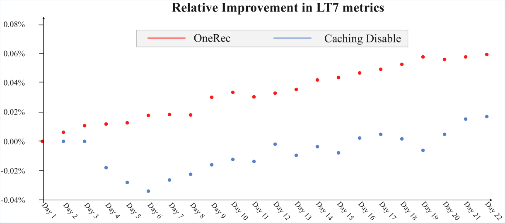
| Scenarios | Online Metrics | vs. Current System | vs. Caching Disabled |
| Kuaishou | App Stay Time | +0.54% | +0.20% |
| LT7 | +0.05% | +0.03% | |
| Watch Time | +1.98% | +0.75% | |
| Video View | +2.52% | +1.79% | |
| Engagement Depth | +1.78% | +1.30% | |
| Like | +2.43% | +0.88% | |
| Follow | +3.24% | +1.29% | |
| Comment | +5.27% | +3.18% | |
| Collect | +2.93% | +0.73% | |
| Foward | +5.90% | +4.92% | |
| Kuaishou Lite | App Stay Time | +1.24% | +0.55% |
| LT7 | +0.08% | +0.02% | |
| Watch Time | +3.28% | +1.58% | |
| Video View | +3.39% | +1.71% | |
| Engagement Depth | +2.89% | +2.49% | |
| Like | +1.49% | -1.71% | |
| Follow | +2.28% | +0.89% | |
| Comment | +3.20% | +0.60% | |
| Collect | +1.91% | -1.03% | |
| Foward | +3.48% | +1.35% |
通过严格的线上 A/B 测试，我们的 OneRec 系统已成功取代原有的缓存机制，目前在快手主要场景中服务 25% 的流量。
Appendix C 词元化案例研究
C.1 表示案例
C.2 词元化案例
我们在图 17 和图 18 中展示了由 RQ-Kmeans 生成的离散物品语义标识符案例。我们的词元化方法可以生成从粗到细的物品语义标识符，其中第一个码字表示最粗的类别，第二个和第三个码字的类别则越来越细。
Appendix D 符号说明
| General Notation | |
| Model hidden dimension (embedding dimension) | |
| Number of quantization layers in tokenization (set to 3) | |
| Codebook size for each quantization layer | |
| Coarse-to-fine semantic identifiers for item | |
| Item Tokenization | |
| Embedding dimension in tokenization (set to 512) | |
| The number of original multimodal token vectors of an item (set to 1280) | |
| Multimodal token vectors from miniCPM-V-8B, | |
| The number of compressed multimodal token vectors of an item (set to 4) | |
| Query tokens in QFormer at layer , | |
| Compressed multimodal representation after QFormer, | |
| Number of QFormer layers (set to 4) | |
| Residual vectors at quantization layer | |
| Codebook (K-means centroids) at quantization layer | |
| -th centroid in the codebook at layer | |
| Semantic identifier for item at quantization layer | |
| Dataset of item pairs with high collaborative similarity | |
| Temperature coefficient for item-to-item loss | |
| Similarity function used in item-to-item contrastive loss | |
| A batch of | |
| The -th caption token | |
| Multi-Scale Feature Engineering | |
| Length of short-term behavior sequence (set to 20) | |
| Length of positive-feedback behavior sequence (set to 256) | |
| Length of lifelong behavior sequence (set to 2000) | |
| Concatenated user static features before dense transformation | |
| Concatenated short-term behavior features before dense transformation | |
| Concatenated positive-feedback behavior features before dense transformation | |
| Concatenated lifelong behavior features before dense transformation | |
| Individual feature embeddings (e.g., for user static) | |
| Feature embeddings in the short-term pathway (e.g., , etc.) | |
| Feature embeddings in the positive-feedback pathway | |
| Feature embeddings in the lifelong pathway | |
| User static pathway representation, | |
| Short-term pathway representation, | |
| Positive-feedback pathway representation, | |
| Processed lifelong features before QFormer compression, | |
| Query vectors at QFormer layer in the lifelong pathway | |
| Final lifelong pathway representation, | |
| Number of query tokens in lifelong pathway compression (set to 128) | |
| Number of QFormer blocks in lifelong pathway (set to 2) | |
| Threshold for hierarchical clustering termination | |
| Encoder-Decoder Architecture | |
| Number of transformer encoder layers | |
| Number of transformer decoder layers | |
| Positional embeddings, | |
| Hidden states at encoder layer | |
| Final encoder output | |
| Decoder hidden states for item at layer | |
| Input sequence for item : | |
| Beginning-of-sequence token | |
| Number of expert networks in MoE layers | |
| Top- routing strategy parameter in MoE | |
| Gating weights for -th expert in MoE layer | |
| Output of -th expert network in MoE layer | |
| Preference Alignment & Reinforcement Learning | |
| Policy model with parameters | |
| Old policy model (before update) | |
| Modified old policy with early clipping | |
| Number of generated samples per user | |
| Number of samples selected for format reward | |
| Reward for generated item (P-Score) | |
| Advantage for generated item | |
| Clipping parameter in ECPO | |
| Early clipping parameter in ECPO () | |
| ECPO optimization objective | |
| Stop gradient operation | |
| Industrial Constraints | |
| Set of legal (valid) generated items | |
| Set of viral content items | |
| Optimal proportion threshold for viral content | |
| Down-weighting factor for viral content reward () | |